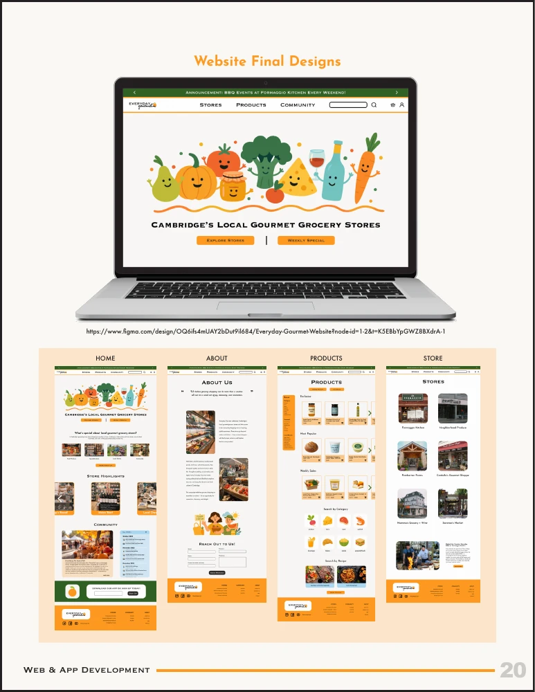

01 / Brand, Web & Film
arki pictures
A film studio where my work in storytelling, visual identity, and web design comes together.
Websites, films, useful little tools, and things made by hand. A collection of what I do, and what I’m figuring out.
Browse the archive
A film studio where my work in storytelling, visual identity, and web design comes together.

Exploring how a website and app can make discovering local grocery stores more inviting.

A playful kitchen companion for finding recipes and making everyday cooking a little easier.
An ongoing experiment in turning scattered receipts into organized invoices.
Clay, handwritten letters, and experiments without a brief. Some finished, some still taking shape.